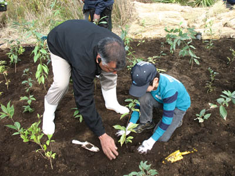
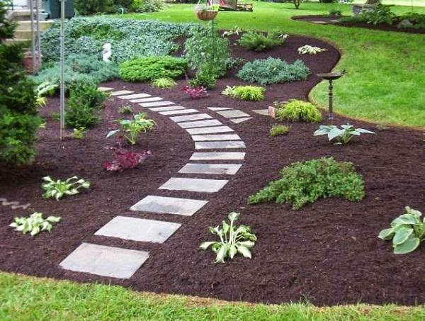
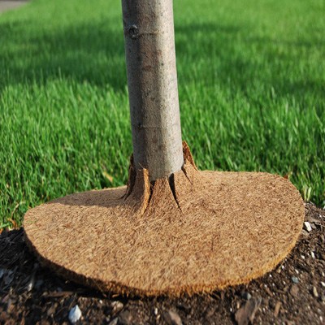
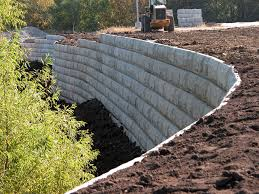
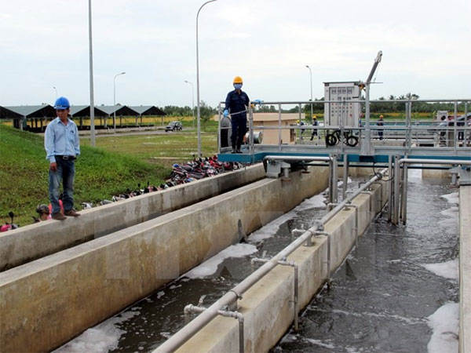

Home
ReadMore
Prevent
Contact US
HOW TO PREVENT SOIL EROSION
Plant Vegetation.
The two main causes of soil erosion are wind and water. Planting vegetation in the soil can help create a strong root system within the soil to help keep it in place. The plant roots hold everything together and prevent the soil from breaking apart. Good examples of vegetation that could be planted are turf, grasses, and different types of ground cover that can easily spread throughout the soil and strengthen it.

Stone or Mulch.When is mulch ever a bad thing with landscapes? Setting down mulch or stone will also help prevent soil erosion. The mulch can provide an extra layer and help absorb water, preventing it from soaking into the soil beneath the mulch and protecting any nutrients and seeds growing within the soil. Stone can help reduce the speed of water run off and direct water flow away from the soil as well. Since planting vegetation is a good idea, once done it should be covered with mulch so it has the protection to grow properly.

Mulch Mats. When laying down mulch to prevent soil erosion, there are still certain areas of a landscape where the mulch can be blown or washed away. Areas around trees where there’s an elevation or slight slope in the soil can be problematic areas when stormy weather comes in. Mulch mats are fiber entwined mesh mats of straw or synthetic fibers that will keep mulch in place. Mulch mats are a perfect preventative measure to stabilize newly soil and seeded turf areas on sloped surfaces.

Retaining Wall. When dealing with eroding slopes, sometimes they may be too sever to leave unchecked. Building retaining walls within the sloped area will retain the soil and level out the sloped areas. By doing this, the vegetation within the soil will have more time to grow and their roots will strengthen the soil itself, preventing soil erosion overall within the landscape.

Drainage Systems Drainage systems are another important factor when trying to prevent surface water runoff and soil erosion. Having inlets and proper drainage pipes within the landscape and homes can help direct water away from sensitive areas that may be prone to soil erosion. Having such systems in place will help keep your landscape healthy. Also, be sure to include perforated drainage pipes within the landscape ground to prevent over-saturation of soil which can cause damage to turf and plat material.
